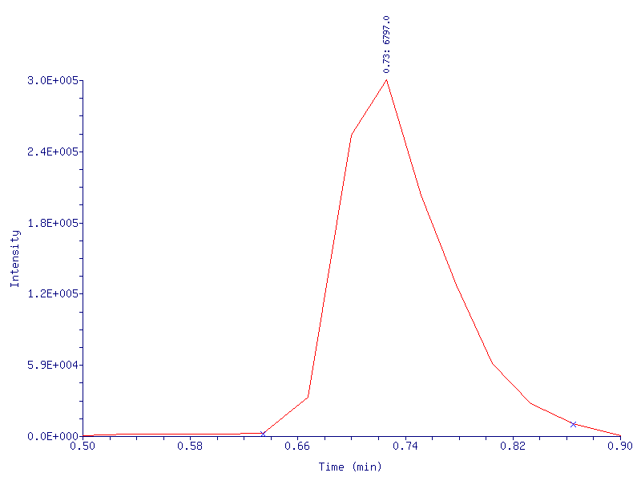
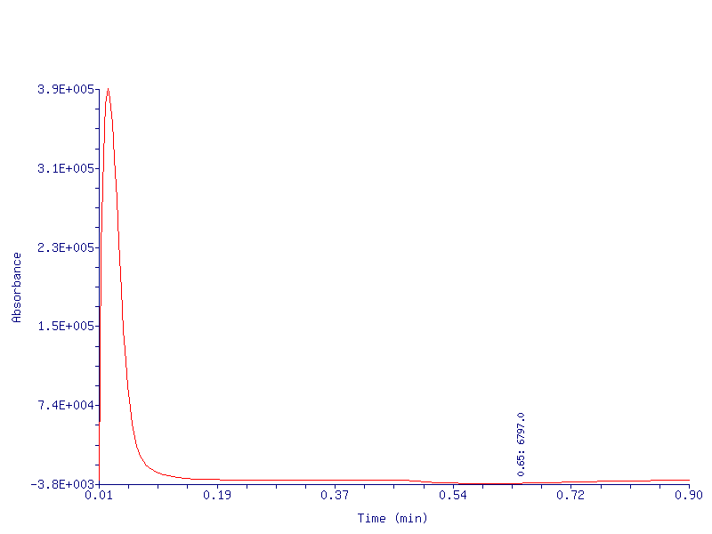
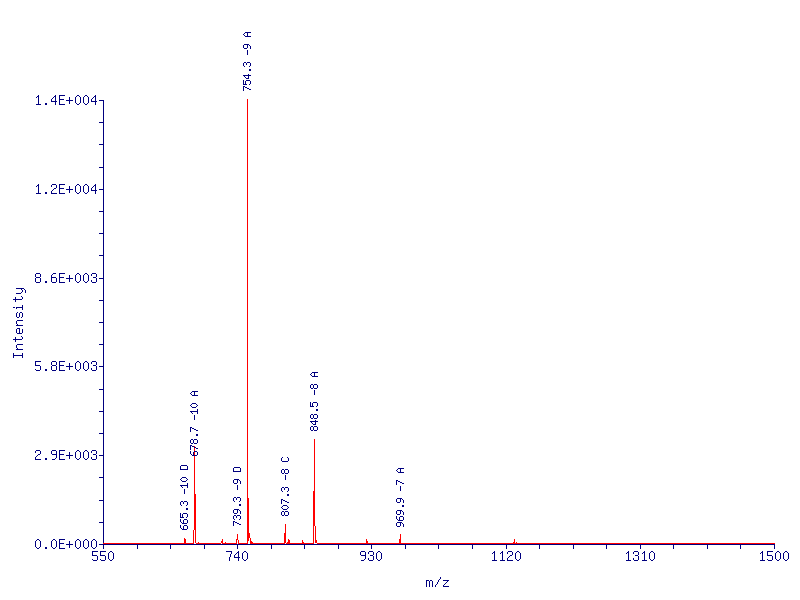
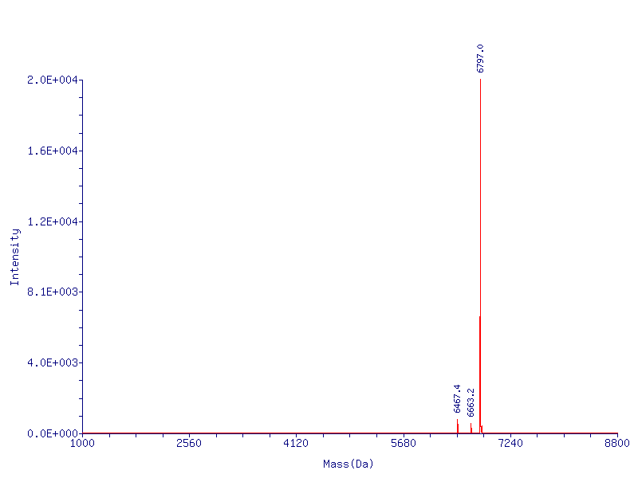
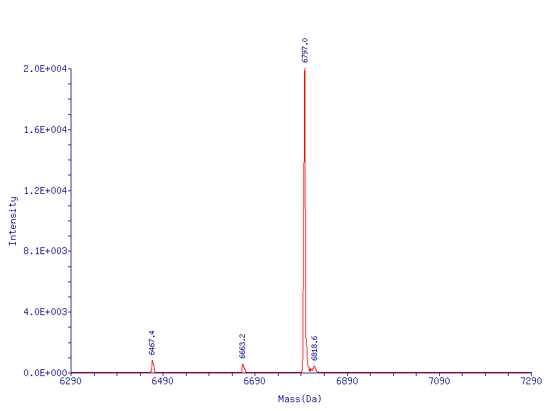

|
Data File: C:\Xcalibur\data\Novatia\200815\p1\411972-5-6.raw Acquisition Date: 8/20/2015 Plate Position: D3 Oligo Name: JsJH424 seq 1 Position: 39 Inj Vol: 20 Instrument Method: C:\Xcalibur\methods\oligo_htcs Processing Method: C:\Xcalibur\methods\oligo_htcs Nucleotide: CAT TGT ATG GGA TCT GAT CTG G Average Mass (Da): 6796.4 Monoisotopic Mass (Da): 6793.1 |
| RT (min) | Target Mass (Da) | Observed Mass (Da) | Mass Error | Intensity | % Abundance (in Spectrum) |
%Purity (Estimate) |
Identity | Result Code |
|---|---|---|---|---|---|---|---|---|
| 0.73 | 6796.4 | 6797.0 | 0.6 Da (0.009 %) | 2.02E+004 | 85.16 | 86.91 | Target Mass | G |
| RT (min) | Calculated Mass (Da) | Observed Mass (Da) | Mass Error | Intensity | Sequence |
|---|---|---|---|---|---|
| 0.73 | 6796.4 | 6797.0 | 0.6 Da (0.009 %) | 2.02E+004 | C1-G22 |
| RT (min) | Base Peak Mass (Da) | Intensity | Spectral Quality | LC/MS Peak Area | LC/MS Area Percent |
|---|---|---|---|---|---|
| 0.73 | 6797.0 | 2.02E+004 | ok | 1.55E+006 | 100.00 |
[<<]
[Top]
[LC/UV 260 nm]
LC/MS Chromatogram of JsJH424 seq 1:
TIC

[<<]
[Top]
LC/UV 260 nm Chromatogram of JsJH424 seq 1:

[<<]
[Top]
[Deconvolution]
[Zoom Deconvolution]
[Deconvolution Peak Report]
[View Data]
[Log File]
ESI Mass Spectrum of JsJH424 seq 1, RT = 0.73 min:
Scan Mode: ITMS - p Full ms
Scans Averaged: 5-11 Minus: 2-4

[<<]
[Top]
[ESI Mass Spectrum]
[Zoom Deconvolution]
[Deconvolution Peak Report]
[View Data]
[Log File]
Deconvoluted Mass Spectrum of JsJH424 seq 1, RT = 0.73 min:

[<<]
[Top]
[ESI Mass Spectrum]
[Deconvolution]
[Deconvolution Peak Report]
[View Data]
[Log File]
Zoom Deconvoluted Mass Spectrum of JsJH424 seq 1, RT = 0.73 min:

[<<]
[Top]
[ESI Mass Spectrum]
[Deconvolution]
[View Data]
[Log File]
Deconvolution Peak Report:
| Mass (Da) | Intensity | Delta Mass |
%Relative | %Total | Presumed Identity |
|---|---|---|---|---|---|
| 6797.0 | 2.02E+004 | 0.0 | 100.00 | 85.16 | Target Mass: 6796.4, C1-G22 |
| 6803.6 | 1.79E+003 | 6.6 | 8.84 | 7.53 | ? |
| 6467.4 | 7.92E+002 | -329.6 | 3.92 | 3.34 | 6796.4 (Minus G) |
| 6663.2 | 5.29E+002 | -133.8 | 2.61 | 2.23 | 6796.4 (A depurination) |
| 6818.6 | 4.15E+002 | 21.6 | 2.05 | 1.75 | 6796.4 (*na adduct) |
| Result Code | Indication |
|---|---|
| Target mass found in chromatogram as the most abundant component within 0.025% mass error tolerance | |
| Target mass found as a major component or as a minor component with other target masses, but NOT as most abundant component in chromatogram | |
| Target mass found in chromatogram with either or all of the following: (a) other non-target components present in spectrum > 30% abundance (b) low spectral quality (low intensity and/or score) | |
| Target mass found in chromatogram, but NOT as the most abundant in any of the chromatographic peaks | |
| Target mass NOT found in chromatogram within 0.025% mass error tolerance | |
| No target masses specified |